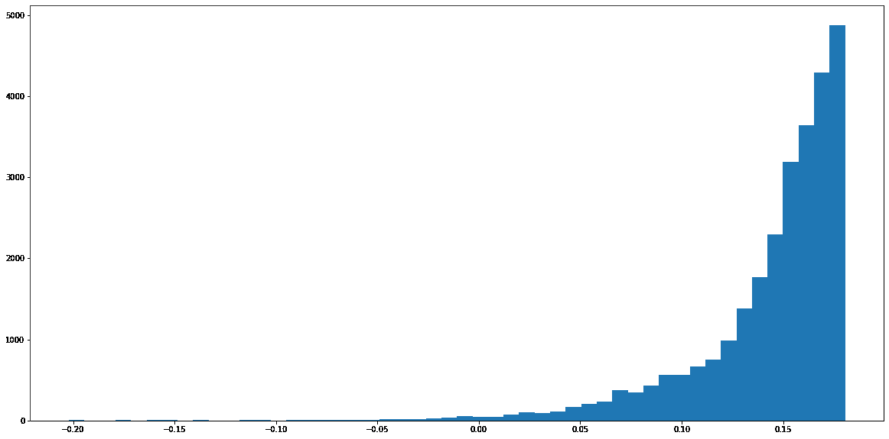
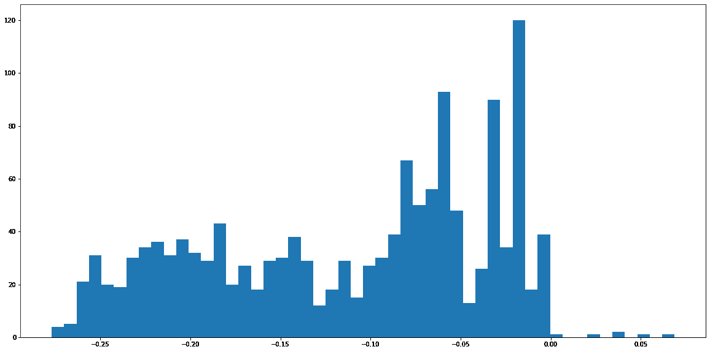

入侵检测系统监视网络或一组系统的恶意活动或违反策略的情况。任何被发现的恶意活动或违规行为都会被阻止或报告。在这一章中，我们将使用机器学习来设计和实现几个入侵检测系统。我们将从检测垃圾邮件的经典问题开始。然后我们将继续对恶意网址进行分类。我们将简短地解释如何捕获网络流量，以便我们可以解决更具挑战性的网络问题，如僵尸网络和DDoS检测。我们将为内部威胁构建一个分类器。最后，我们将解决依赖于实例的、成本敏感的、完全不平衡的、具有挑战性的信用卡欺诈问题。
本章包含以下配方:
以下是本章的技术先决条件:
代码和数据集可以在https://github . com/packt publishing/Machine-Learning-for-cyber security-Cookbook/tree/master/chapter 06找到。
垃圾邮件(不受欢迎的邮件)约占全球电子邮件流量的60%。除了垃圾邮件检测软件自1978年第一封垃圾邮件以来取得了进步这一事实之外，任何拥有电子邮件帐户的人都知道，垃圾邮件仍然是一个耗时且昂贵的问题。这里，我们提供了一个使用机器学习进行垃圾邮件-垃圾邮件(非垃圾邮件)分类的方法。
该食谱的准备包括在pip中安装scikit-learn包。该命令如下所示:
pip install sklearn
另外，将spamassassin-public-corpus.7z解压到一个名为spamassassin-public-corpus的文件夹中。
在下面的步骤中，我们为想要的和不想要的电子邮件构建了一个分类器:
import os
spam_emails_path = os.path.join("spamassassin-public-corpus", "spam")
ham_emails_path = os.path.join("spamassassin-public-corpus", "ham")
labeled_file_directories = [(spam_emails_path, 0), (ham_emails_path, 1)]
email_corpus = []
labels = []
for class_files, label in labeled_file_directories:
files = os.listdir(class_files)
for file in files:
file_path = os.path.join(class_files, file)
try:
with open(file_path, "r") as currentFile:
email_content = currentFile.read().replace("\n", "")
email_content = str(email_content)
email_corpus.append(email_content)
labels.append(label)
except:
pass
from sklearn.model_selection import train_test_split
X_train, X_test, y_train, y_test = train_test_split(
email_corpus, labels, test_size=0.2, random_state=11
)
from sklearn.pipeline import Pipeline
from sklearn.feature_extraction.text import HashingVectorizer, TfidfTransformer
from sklearn import tree
nlp_followed_by_dt = Pipeline(
[
("vect", HashingVectorizer(input="content", ngram_range=(1, 3))),
("tfidf", TfidfTransformer(use_idf=True,)),
("dt", tree.DecisionTreeClassifier(class_weight="balanced")),
]
)
nlp_followed_by_dt.fit(X_train, y_train)
from sklearn.metrics import accuracy_score, confusion_matrix
y_test_pred = nlp_followed_by_dt.predict(X_test)
print(accuracy_score(y_test, y_test_pred))
print(confusion_matrix(y_test, y_test_pred))
以下是输出:
0.9761620977353993
[[291 7]
[ 13 528]]
我们首先准备一个由原始电子邮件组成的数据集(步骤1 )，读者可以通过查看数据集来检查它。在步骤2 中，我们指定垃圾邮件和恶意邮件的路径，并为它们的目录分配标签。我们继续将所有的电子邮件读入一个数组，并在步骤3 中创建一个标签数组。接下来，我们训练测试分割我们的数据集(步骤4 ，然后在步骤5 中在其上安装一个NLP管道。最后，在步骤6 中，我们测试我们的管道。我们看到精确度相当高。由于数据集相对平衡，因此不需要使用特殊的指标来评估成功与否。
钓鱼网站是一种网站，它试图通过让您认为自己在合法网站上来获取您的帐户密码或其他个人信息。一些网络钓鱼URL与预期URL的不同之处在于专门选择的单个字符，以增加打字错误的几率，而另一些则利用其他渠道来产生流量。
以下是一个钓鱼网站的示例，该网站试图通过迫使用户相信他们的电子邮件将被关闭来获取用户的电子邮件地址:
由于网络钓鱼是最成功的攻击方式之一，因此能够识别URL何时非法至关重要。在这个食谱中，我们将建立一个机器学习模型来检测钓鱼网址。
该配方的准备包括将scikit-learn和pandas安装在pip中。该命令如下所示:
pip install sklearn pandas
另外，提取名为phishing-dataset.7z的档案。
在下面的步骤中，我们将读入一个特征化的URL数据集，并在其上训练一个分类器。
import pandas as pd
import os
train_CSV = os.path.join("phishing-dataset", "train.csv")
test_CSV = os.path.join("phishing-dataset", "test.csv")
train_df = pd.read_csv(train_CSV)
test_df = pd.read_csv(test_CSV)
y_train = train_df.pop("target").values
y_test = test_df.pop("target").values
X_train = train_df.values
X_test = test_df.values
from sklearn.ensemble import RandomForestClassifier
from sklearn.metrics import accuracy_score, confusion_matrix
clf = RandomForestClassifier()
clf.fit(X_train, y_train)
y_test_pred = clf.predict(X_test)
print(accuracy_score(y_test, y_test_pred))
print(confusion_matrix(y_test, y_test_pred))
以下是输出:
0.9820846905537459
[[343 4]
[ 7 260]]
我们首先下载数据集，然后将其读入数据帧(步骤1 和 2 )以便于检查和操作。接下来，我们将数据集放入数组中，为机器学习做准备(步骤3 和 4 )。该数据集由数千个钓鱼URL的特征向量组成。共有30种功能，其名称和值如下表所示:
|
属性 |
价值观念 |
列名 |
|
有IP地址 |
{ 1,0 } |
has_ip |
|
有一个很长的URL |
{ 1,0,-1 } |
long_url |
|
使用起酥油服务 |
{ 0,1 } |
short_service |
|
有“@”符号的 |
{ 0,1 } |
has_at |
|
双斜线重定向 |
{ 0,1 } |
double_slash_redirect |
|
有前缀和后缀的 |
{ -1,0,1 } |
pref_suf |
|
有子域的 |
{ -1,0,1 } |
has_sub_domain |
|
最终状态 |
{ -1,1,0 } |
ssl_state |
|
域名注册长度 |
{ 0,1,-1 } |
long_domain |
|
Favicon |
{ 0,1 } |
favicon |
|
是一个标准端口 |
{ 0,1 } |
port |
|
使用HTTPS代币 |
{ 0,1 } |
https_token |
|
请求_URL |
{ 1,-1 } |
req_url |
|
异常URL锚 |
{ -1,0,1 } |
url_of_anchor |
|
标签中的链接 |
{ 1,-1,0 } |
tag_links |
|
SFH |
{ -1,1 } |
SFH |
|
提交到电子邮件 |
{ 1,0 } |
submit_to_email |
|
异常URL |
{ 1,0 } |
abnormal_url |
|
再直接的 |
{ 0,1 } |
redirect |
|
鼠标悬停时 |
{ 0,1 } |
mouseover |
|
右键单击 |
{ 0,1 } |
right_click |
|
弹出窗口 |
{ 0,1 } |
popup |
|
内联框架 |
{ 0,1 } |
iframe |
|
域名年龄 |
{ -1,0,1 } |
domain_age |
|
DNS记录 |
{ 1,0 } |
dns_record |
|
网络流量 |
{ -1,0,1 } |
traffic |
|
页面等级 |
{ -1,0,1 } |
page_rank |
|
谷歌索引 |
{ 0,1 } |
google_index |
|
指向页面的链接 |
{ 1,0,-1 } |
links_to_page |
|
统计报告 |
{ 1,0 } |
stats_report |
|
结果 |
{ 1,-1 } |
target |
在步骤5 中，我们训练并测试一个随机森林分类器。精确度相当高，但是根据数据集的平衡程度，可能有必要考虑FP约束。有许多方法可以扩展这种检测器，例如添加其他功能和增加数据集。鉴于大多数网站都包含一些图像，图像分类器只是模型改善其结果的一种方式。
捕获网络流量对于故障排除、分析以及软件和通信协议开发非常重要。对于注重安全的个人而言，监控网络流量对于检测恶意活动或违反策略的行为至关重要。在本菜谱中，我们将演示如何捕获和检查网络流量。
在准备此配方时，请遵循以下步骤:
pip install pyshark
在下面的步骤中，我们将利用名为PyShark的Python库和Wireshark来捕获和检查网络流量。
pip show pyshark
记下包裹的位置。在这个位置的pyshark目录中，找到文件config.ini。将tshark_path编辑到wireshark安装文件夹中tshark的位置。类似地，将dumpcap_path编辑到wireshark安装文件夹中dumpcap的位置。
步骤2 和 4 应该在Python环境下执行。请注意，从当前版本开始，pyshark在Jupyter笔记本上运行时可能会有一些错误。
import pyshark
capture_time = 20
import datetime
start = datetime.datetime.now()
end = start+datetime.timedelta(seconds=capture_time)
file_name = "networkTrafficCatpureFrom"+str(start).replace(" ", "T")+"to"+str(end).replace(" ","T")+".pcap"
cap = pyshark.LiveCapture(output_file=file_name)
cap.sniff(timeout=capture_time)

我们通过配置Wireshark的命令行变体tshark来开始这个方法。一旦我们完成了tshark的配置，现在就可以通过pyshark访问它了。我们导入pyshark并指定网络捕获的持续时间(步骤2 )。捕获的网络流量数据可能非常庞大，因此控制持续时间非常重要。接下来，我们以一种独特且易于理解的方式指定输出捕获的名称(步骤3 )，然后，在步骤4 中，我们继续捕获流量。最后，在步骤6 中，我们使用Wireshark的GUI来检查捕获的网络流量。在有能力的人看来，这种网络流量有助于检测不安全的物联网设备、错误配置、异常事件、黑客攻击企图，甚至数据泄露。
网络行为异常检测 ( NBAD )是对网络异常事件或趋势的持续监控。理想情况下，NBAD程序实时跟踪关键网络特征，如果检测到指示威胁的奇怪事件或趋势，就会发出警报。在这个菜谱中，我们将使用机器学习来构建一个NBAD。
使用的数据集是著名数据集KDD数据集的修改子集，是测试和构建IDS系统的标准集。该数据集包含在军事网络环境中模拟的各种入侵。
该配方的准备包括安装scikit-learn、pandas和matplotlib。该命令如下所示:
pip install sklearn pandas matplotlib
另外，解压存档，kddcup_dataset.7z。
在以下步骤中，我们将利用隔离林来检测KDD数据集中的异常:
import pandas as pd
kdd_df = pd.read_csv("kddcup_dataset.csv", index_col=None)
y = kdd_df["label"].values
from collections import Counter
Counter(y).most_common()
将会看到以下输出:
[('normal', 39247),
('back', 1098),
('apache2', 794),
('neptune', 93),
('phf', 2),
('portsweep', 2),
('saint', 1)]
def label_anomalous(text):
"""Binarize target labels into normal or anomalous."""
if text == "normal":
return 0
else:
return 1
kdd_df["label"] = kdd_df["label"].apply(label_anomalous)
y = kdd_df["label"].values
counts = Counter(y).most_common()
contamination_parameter = counts[1][1] / (counts[0][1] + counts[1][1])
from sklearn.preprocessing import LabelEncoder
encodings_dictionary = dict()
for c in kdd_df.columns:
if kdd_df[c].dtype == "object":
encodings_dictionary[c] = LabelEncoder()
kdd_df[c] = encodings_dictionary[c].fit_transform(kdd_df[c])
kdd_df_normal = kdd_df[kdd_df["label"] == 0]
kdd_df_abnormal = kdd_df[kdd_df["label"] == 1]
y_normal = kdd_df_normal.pop("label").values
X_normal = kdd_df_normal.values
y_anomaly = kdd_df_abnormal.pop("label").values
X_anomaly = kdd_df_abnormal.values
from sklearn.model_selection import train_test_split
X_normal_train, X_normal_test, y_normal_train, y_normal_test = train_test_split(
X_normal, y_normal, test_size=0.3, random_state=11
)
X_anomaly_train, X_anomaly_test, y_anomaly_train, y_anomaly_test = train_test_split(
X_anomaly, y_anomaly, test_size=0.3, random_state=11
)
import numpy as np
X_train = np.concatenate((X_normal_train, X_anomaly_train))
y_train = np.concatenate((y_normal_train, y_anomaly_train))
X_test = np.concatenate((X_normal_test, X_anomaly_test))
y_test = np.concatenate((y_normal_test, y_anomaly_test))
from sklearn.ensemble import IsolationForest
IF = IsolationForest(contamination=contamination_parameter)
IF.fit(X_train
decisionScores_train_normal = IF.decision_function(X_normal_train)
decisionScores_train_anomaly = IF.decision_function(X_anomaly_train)
import matplotlib.pyplot as plt
%matplotlib inline
plt.figure(figsize=(20, 10))
_ = plt.hist(decisionScores_train_normal, bins=50)
下图提供了输出:

plt.figure(figsize=(20, 10))
_ = plt.hist(decisionScores_train_anomaly, bins=50)
下图提供了输出:

选择一个截止点，以便从正常观察中分离出异常:
在测试装置上检查此临界值:
cutoff = 0
print(Counter(y_test))
print(Counter(y_test[cutoff > IF.decision_function(X_test)]))
The following is the output:
Counter({0: 11775, 1: 597})
Counter({1: 595, 0: 85})
它是如何工作的…
我们从将KDD cup数据集读入数据框开始。接下来，在步骤2 中，我们检查我们的数据，看到大部分流量是正常的，正如预期的那样，但是有一小部分流量是异常的。显然，这个问题非常不平衡。因此，这个问题是异常检测方法的一个有希望的候选者。在步骤3 和步骤5 中，我们将所有非正常流量转换为单一类别，即异常。
知道了决策函数是描述一个点有多简单的一个度量，我们想要通过选择一个给出清晰分离的数值截止点来从复杂点中分离出简单点。目测显示在步骤12 中选择的值。
最后，我们可以使用我们的模型进行预测，并对其性能进行评估。在步骤13 中，我们看到该模型能够在不触发太多误报(正常流量的实例)的情况下发现大量异常，按比例来说。
僵尸网络流量检测
僵尸网络是一个由连接互联网的受损设备组成的网络。僵尸网络可以用来执行分布式拒绝服务攻击 ( DDoS攻击)，窃取数据，发送垃圾邮件，以及许多其他创造性的恶意使用。僵尸网络会造成巨大的损失。例如，在谷歌上快速搜索僵尸网络一词显示，在撰写本文的3天前，Electrum僵尸网络窃取了460万美元的加密货币。在这个食谱中，我们建立了一个分类器来检测僵尸网络流量。
做好准备
该配方的准备包括在pip中安装scikit-learn。该命令如下所示:
怎么做…
pip install sklearn
首先读入经过酸洗的数据:
import pickle
file = open('CTU13Scenario1flowData.pickle', 'rb')
botnet_dataset = pickle.load(file)
X_train, y_train, X_test, y_test = (
botnet_dataset[0],
botnet_dataset[1],
botnet_dataset[2],
botnet_dataset[3],
)
from sklearn.tree import *
clf = DecisionTreeClassifier()
clf.fit(X_train, y_train)
clf.score(X_test, y_test)
以下是输出:
它是如何工作的…
我们开始步骤1 ，通过解包加载数据。数据集已经预先设计为平衡的，因此我们不需要担心不平衡的数据挑战。在实践中，僵尸网络的检测可能需要满足对误报的限制。继续，我们利用已经预先定义的训练测试分割来分割我们的数据(步骤2 )。我们现在可以实例化一个分类器，使其适合数据，然后测试它(步骤3 和 5 )。看精度，我们看到是挺高的。由于数据集已经是平衡的，我们不必担心我们的指标会误导人。总的来说，检测僵尸网络具有挑战性。GameOver Zeus僵尸网络恶意软件包说明了检测僵尸网络的难度。最初发现于2007年，它运作了三年多，最终导致估计7000万美元的被盗资金，并导致FBI在2010年逮捕了100多名个人。直到2012年3月，微软才宣布能够关闭僵尸网络的大部分命令和控制(C & C)服务器。
0.9991001799640072
内部威胁对雇主来说是一个复杂且日益增长的挑战。它通常被定义为员工采取的对组织有潜在危害的任何行动。这些行为包括未经批准的数据传输或破坏资源。内部威胁可能以各种各样的新形式出现，由不同的目标驱动，从心怀不满的员工颠覆雇主的威信，到高级持续威胁 ( APT )。
我们对CERT insider威胁场景(v.4.2)进行分析，特别是因为它代表了一个密集的针头数据集，这意味着它具有很高的攻击发生率。
攻击的基本计划是，首先，手工设计新功能，例如是否向外部人员发送了电子邮件，或者是否在工作时间之外进行了登录。接下来，想法是提取每个用户的多元时间序列。这个时间序列将由一系列向量组成——每个向量构成我们手工设计的特征在一天中出现的次数的计数。因此，我们的输入数据集的形状如下:
(用户数，每天检查的功能总数，时间序列中的天数)。
然后，我们将展平每个用户的时间序列，并利用隔离林来检测异常。
用于内部威胁检测的特征工程
一般来说，每当机器学习解决方案不依赖于端到端深度学习时，可以通过创建有洞察力和信息丰富的功能来提高性能。在这个菜谱中，我们将为内部威胁检测构建几个有前途的新功能。
该配方的准备包括在pip中安装pandas。该命令如下所示:
怎么做…
pip install pandas
在以下步骤中，您将为CERT insider威胁数据集构建新要素:
指定.csv文件及其要读取的列:
import numpy as np
import pandas as pd
path_to_dataset = "./r42short/"
log_types = ["device", "email", "file", "logon", "http"]
log_fields_list = [
["date", "user", "activity"],
["date", "user", "to", "cc", "bcc"],
["date", "user", "filename"],
["date", "user", "activity"],
["date", "user", "url"],
]
features = 0
feature_map = {}
def add_feature(name):
"""Add a feature to a dictionary to be encoded."""
if name not in feature_map:
global features
feature_map[name] = features
features += 1
add_feature("Weekday_Logon_Normal")
add_feature("Weekday_Logon_After")
add_feature("Weekend_Logon")
add_feature("Logoff")
add_feature("Connect_Normal")
add_feature("Connect_After")
add_feature("Connect_Weekend")
add_feature("Disconnect")
add_feature("Email_In")
add_feature("Email_Out")
add_feature("File_exe")
add_feature("File_jpg")
add_feature("File_zip")
add_feature("File_txt")
add_feature("File_doc")
add_feature("File_pdf")
add_feature("File_other")
add_feature("url")
def file_features(row):
"""Creates a feature recording the file extension of the file used."""
if row["filename"].endswith(".exe"):
return feature_map["File_exe"]
if row["filename"].endswith(".jpg"):
return feature_map["File_jpg"]
if row["filename"].endswith(".zip"):
return feature_map["File_zip"]
if row["filename"].endswith(".txt"):
return feature_map["File_txt"]
if row["filename"].endswith(".doc"):
return feature_map["File_doc"]
if row["filename"].endswith(".pdf"):
return feature_map["File_pdf"]
else:
return feature_map["File_other"]
def email_features(row):
"""Creates a feature recording whether an email has been sent externally."""
outsider = False
if not pd.isnull(row["to"]):
for address in row["to"].split(";"):
if not address.endswith("dtaa.com"):
outsider = True
if not pd.isnull(row["cc"]):
for address in row["cc"].split(";"):
if not address.endswith("dtaa.com"):
outsider = True
if not pd.isnull(row["bcc"]):
for address in row["bcc"].split(";"):
if not address.endswith("dtaa.com"):
outsider = True
if outsider:
return feature_map["Email_Out"]
else:
return feature_map["Email_In"]
def device_features(row):
"""Creates a feature for whether the user has connected during normal hours or otherwise."""
if row["activity"] == "Connect":
if row["date"].weekday() < 5:
if row["date"].hour >= 8 and row["date"].hour < 17:
return feature_map["Connect_Normal"]
else:
return feature_map["Connect_After"]
else:
return feature_map["Connect_Weekend"]
else:
return feature_map["Disconnect"]
def logon_features(row):
"""Creates a feature for whether the user logged in during normal hours or otherwise."""
if row["activity"] == "Logon":
if row["date"].weekday() < 5:
if row["date"].hour >= 8 and row["date"].hour < 17:
return feature_map["Weekday_Logon_Normal"]
else:
return feature_map["Weekday_Logon_After"]
else:
return feature_map["Weekend_Logon"]
else:
return feature_map["Logoff"]
我们不会利用员工访问的URL中包含的信息:
我们只保存事件发生的日期，而不是完整的时间戳:
def http_features(row):
"""Encodes the URL visited."""
return feature_map["url"]
def date_to_day(row):
"""Converts a full datetime to date only."""
day_only = row["date"].date()
return day_only
log_feature_functions = [
device_features,
email_features,
file_features,
logon_features,
http_features,
]
dfs = []
for i in range(len(log_types)):
log_type = log_types[i]
log_fields = log_fields_list[i]
log_feature_function = log_feature_functions[i]
df = pd.read_csv(
path_to_dataset + log_type + ".csv", usecols=log_fields, index_col=None
)
date_format = "%m/%d/%Y %H:%M:%S"
df["date"] = pd.to_datetime(df["date"], format=date_format)
new_feature = df.apply(log_feature_function, axis=1)
df["feature"] = new_feature
cols_to_keep = ["date", "user", "feature"]
df = df[cols_to_keep]
df["date"] = df.apply(date_to_day, axis=1)
dfs.append(df)
joint = pd.concat(dfs)
joint = joint.sort_values(by="date")
接下来，我们通过仅使用日期(步骤10 )来简化我们的数据，而不是在我们的特征化数据中使用完整的时间戳。在步骤11 中，我们将数据读入pandas数据帧。然后我们编辑当前的日期格式以适应熊猫(步骤12 )，然后收集所有新的特性，同时删除旧的特性(步骤13 )。在步骤14 中，我们将数据转换为一个时间序列，其delta为单日。最后，在步骤15 中，我们将所有数据聚集到一个大的排序数据帧中。我们现在已经完成了特征工程阶段的第一次迭代。为了提高性能和增加功能，有许多方向可以追求。这些方法包括观察电子邮件文本中的负面情绪，以及使用心理测量学分析个性。
An additional feature tracks whether an employee has logged into a device outside of business hours (Step 8). For simplicity, we do not utilize the URLs visited by employees (Step 9), though these may be indicative of malicious behavior.
Next, we simplify our data by using only the date (Step 10), rather than the full timestamp in our featurized data. In Step 11, we read our data into a pandas data frame. We then edit the current date format to fit pandas (Step 12), and then gather up all of the new features, while dropping the old ones (Step 13). In Step 14, we transform the data into a time series whose delta are single days. Finally, in Step 15, we aggregate all of the data into one large sorted data frame. We have now completed the first iteration of the feature-engineering phase. There are many directions you can pursue in order to improve performance and add features. These include observing email text for negative sentiment and analyzing personality using psychometrics.
针对内部威胁采用异常检测
在设计了有前景的新功能后，我们接下来的步骤是训练-测试split，将数据处理成方便的时间序列形式，然后进行分类。我们的训练集和测试集将是数据集的两个时态部分。这样，我们可以很容易地确保用于训练的输入的形状与用于测试的输入的形状相同，而不会在我们的评估中作弊。
该配方的准备包括在pip中安装scikit-learn、pandas和matplotlib。该命令如下所示:
怎么做...
pip install sklearn pandas matplotlib
在以下步骤中，您将把特征数据转换为时间序列的集合，并使用隔离林检测犯罪:
然后我们将日期编入索引:
threat_actors = [
"AAM0658",
"AJR0932",
"BDV0168",
<snip>
"MSO0222",
]
start_date = joint["date"].iloc[0]
end_date = joint["date"].iloc[-1]
time_horizon = (end_date - start_date).days + 1
def date_to_index(date):
"""Indexes dates by counting the number of days since the starting date of the dataset."""
return (date - start_date).days
def extract_time_series_by_user(user_name, df):
"""Filters the dataframe down to a specific user."""
return df[df["user"] == user_name]
def vectorize_user_time_series(user_name, df):
"""Convert the sequence of features of a user to a vector-valued time series."""
user_time_series = extract_time_series_by_user(user_name, df)
x = np.zeros((len(feature_map), time_horizon))
event_date_indices = user_time_series["date"].apply(date_to_index).to_numpy()
event_features = user_time_series["feature"].to_numpy()
for i in range(len(event_date_indices)):
x[event_features[i], event_date_indices[i]] += 1
return x
def vectorize_dataset(df):
"""Takes the dataset and featurizes it."""
users = set(df["user"].values)
X = np.zeros((len(users), len(feature_map), time_horizon))
y = np.zeros((len(users)))
for index, user in enumerate(users):
x = vectorize_user_time_series(user, df)
X[index, :, :] = x
y[index] = int(user in threat_actors)
return X, y
X, y = vectorize_dataset(joint)
from sklearn.model_selection import train_test_split
X_train, X_test, y_train, y_test = train_test_split(X, y, stratify=y)
重塑矢量化数据:
将训练和测试数据集分为威胁和非威胁子集:
X_train_reshaped = X_train.reshape(
[X_train.shape[0], X_train.shape[1] * X_train.shape[2]]
)
X_test_reshaped = X_test.reshape([X_test.shape[0], X_test.shape[1] * X_test.shape[2]])
X_train_normal = X_train_reshaped[y_train == 0, :]
X_train_threat = X_train_reshaped[y_train == 1, :]
X_test_normal = X_test_reshaped[y_test == 0, :]
X_test_threat = X_test_reshaped[y_test == 1, :]
from sklearn.ensemble import IsolationForest
contamination_parameter = 0.035
IF = IsolationForest(
n_estimators=100, max_samples=256, contamination=contamination_parameter
)
IF.fit(X_train_reshaped)

normal_scores = IF.decision_function(X_train_normal)
import matplotlib.mlab as mlab
import matplotlib.pyplot as plt
fig = plt.figure(figsize=(8, 4), dpi=600, facecolor="w", edgecolor="k")
normal = plt.hist(normal_scores, 50, density=True)
plt.xlim((-0.2, 0.2))
plt.xlabel("Anomaly score")
plt.ylabel("Percentage")
plt.title("Distribution of anomaly score for non threats")
对训练数据中的威胁角色做同样的操作:
看一下下面的截图:

anomaly_scores = IF.decision_function(X_train_threat)
fig = plt.figure(figsize=(8, 4), dpi=600, facecolor="w", edgecolor="k")
anomaly = plt.hist(anomaly_scores, 50, density=True)
plt.xlim((-0.2, 0.2))
plt.xlabel("Anomaly score")
plt.ylabel("Percentage")
plt.title("Distribution of anomaly score for threats")
Take a look at the following screenshot:
选择一个截止分数:
观察训练数据的截止结果:
cutoff = 0.12
from collections import Counter
s = IF.decision_function(X_train_reshaped)
print(Counter(y_train[cutoff > s]))
以下是输出:
Counter({0.0: 155, 1.0: 23})s = IF.decision_function(X_test_reshaped)
print(Counter(y_test[cutoff > s]))
在上一个配方中完成了特征工程阶段之后，我们继续创建一个模型。在步骤1 中，我们列出了所有威胁因素，为接下来的步骤做准备。在步骤2 中，我们为日期创建了一个索引，因此0对应于开始日期，1对应于第二天，依此类推。在随后的步骤3 和 5 中，我们定义了读取整个数据集时间序列的函数，将其过滤到单个用户，然后对每个用户的时间序列进行矢量化。我们继续对数据集进行矢量化处理(步骤6 )，然后对其进行训练测试分割(步骤7 )。我们在步骤8 中对数据进行了整形，以便能够将其输入隔离林分类器。我们将数据进一步分为良性和威胁子集(步骤9 )，以便调整我们的参数。我们在步骤10 中实例化了一个隔离森林分类器，然后在步骤11 中对数据进行拟合。对于我们的污染参数，我们使用了一个与威胁对良性行为者的比例相对应的值。
Counter({0.0: 46, 1.0: 8})
Having completed the feature-engineering phase in the previous recipe, we went ahead and created a model. In Step 1, we listed all threat actors in preparation for the next steps. In Step 2, we created an indexing for the dates, so that 0 corresponded to the starting date, 1 to the next day, and so on. In the subsequent Steps 3 and 5, we defined functions to read in the whole dataset time series, filter it down to individual users, and then vectorize the time series for each user. We went ahead and vectorized the dataset (Step 6) and then train-test split it (Step 7). We reshaped the data in Step 8 in order to be able to feed it into the isolation forest classifier. We split the data further into benign and threat subsets (Step 9) to allow us to tune our parameters. We instantiated an isolation forest classifier in Step 10 and then fit it on the data in Step 11. For our contamination parameter, we used a value corresponding to the proportion of threats-to-benign actors.
检测DDoS
DDoS ，或分布式拒绝服务，是一种攻击，来自不同来源的流量淹没受害者，导致服务中断。DDoS攻击有很多种，分为三大类:应用层攻击、协议攻击和容量攻击。如今，许多DDoS防御都是手动的。某些IP地址或域被识别，然后被阻止。随着DDoS机器人变得越来越复杂，这种方法正在变得过时。机器学习提供了一个有前途的自动化解决方案。
做好准备
准备这个菜谱需要在pip安装几个包，即scikit-learn和pandas。该命令如下所示:
怎么做…
pip install sklearn pandas
在以下步骤中，我们将训练一个随机森林分类器来检测DDoS流量:
读入包含数据集的.csv文件:
import pandas as pd
features = [
"Fwd Seg Size Min",
"Init Bwd Win Byts",
"Init Fwd Win Byts",
"Fwd Seg Size Min",
"Fwd Pkt Len Mean",
"Fwd Seg Size Avg",
"Label",
"Timestamp",
]
dtypes = {
"Fwd Pkt Len Mean": "float",
"Fwd Seg Size Avg": "float",
"Init Fwd Win Byts": "int",
"Init Bwd Win Byts": "int",
"Fwd Seg Size Min": "int",
"Label": "str",
}
date_columns = ["Timestamp"]
df = pd.read_csv("ddos_dataset.csv", usecols=features, dtype=dtypes,parse_dates=date_columns,index_col=None)
df2 = df.sort_values("Timestamp")
df3 = df2.drop(columns=["Timestamp"])
l = len(df3.index)
train_df = df3.head(int(l * 0.8))
test_df = df3.tail(int(l * 0.2))
y_train = train_df.pop("Label").values
y_test = test_df.pop("Label").values
X_train = train_df.values
X_test = test_df.values
from sklearn.ensemble import RandomForestClassifier
clf = RandomForestClassifier(n_estimators=50)
将随机森林与训练数据相匹配，并根据测试数据对其进行评分:
以下是输出:
clf.fit(X_train, y_train)
clf.score(X_test, y_test)
由于数据集很大，即使导入所有数据也是计算密集型的。出于这个原因，我们从步骤1 开始，从我们的数据集中指定一个我们认为最有希望的特征子集，并记录它们的数据类型，以便我们不必在以后转换它们。然后，我们在步骤2 中将数据读入数据帧。在步骤3 和 4 中，我们按日期对数据进行排序，因为问题需要能够预测未来的事件，然后删除日期列，因为我们将不再使用它。在接下来的两个步骤中，我们执行一个训练测试分割，记住时间进度。然后，我们在步骤8 和步骤9 中实例化、拟合和测试一个随机森林分类器。根据应用的不同，所达到的精度是一个很好的起点。提高性能的一个有希望的方向是考虑源IP和目标IP。原因是，直觉上，连接来自哪里对它是否是DDoS的一部分有很大影响。
0.83262
信用卡公司必须监控欺诈交易，以防止他们的客户因未购买的商品而被收费。这种数据在极度不平衡方面是独一无二的，我们将在本章中处理的特定数据集的欺诈占总交易的0.172%。它只包含数字输入变量，这是PCA变换的结果，以及特征时间和数量。时间特性包含数据集中每个事务和第一个事务之间经过的秒数。 Amount 特性是交易量，例如，我们将在成本敏感学习中使用该特性。类特征是响应参数，在欺诈的情况下，它取值1，否则取值0。
Credit card companies must monitor for fraudulent transactions in order to keep their customers from being charged for items they have not purchased. Such data is unique in being extremely imbalanced, with the particular dataset we will be working on in this chapter having fraud constituting 0.172% of the total transactions. It contains only numeric input variables, which are the result of a PCA transformation, and the features Time and Amount. The Time feature contains the seconds elapsed between each transaction and the first transaction in the dataset. The Amount feature is the amount transaction, a feature that we will use, for instance, in cost-sensitive learning. The Class feature is the response parameter and, in case of fraud, it takes the value 1, and 0 otherwise.
欺骗
y = 1
| 温和的 |
y = 0 预期欺诈 |
y_pred = 1 东帝汶的网络域名代号 |
|
成本=行政费用 冰点 |
成本=行政费用 预测良性 |
y_pred = 0 【数学】函数 |
|
成本=交易金额 长吨 |
成本= 0美元 cost = transaction amount |
与大多数场景不同，我们感兴趣的是最小化来自上述考虑的总成本，而不是准确度、精确度或召回率。 做好准备 |
这个菜谱的准备工作包括在pip中安装scikit-learn、pandas和matplotlib，以及一个名为costcla的新软件包。该命令如下所示:
在准备这个食谱时，从https://www . ka ggle . com/mlg-ulb/credit card fraud/downloads/credit card fraud . zip/3(开放数据库许可)下载信用卡交易数据集。
在下面的步骤中，我们将使用信用卡交易数据上的costcla库构建一个依赖于示例的、成本敏感的分类器:
pip install sklearn pandas matplotlib costcla
导入pandas并将与交易相关的数据读入数据帧:
定义与图相对应的成本矩阵:
import pandas as pd
fraud_df = pd.read_csv("FinancialFraudDB.csv", index_col=None)
card_replacement_cost = 5
customer_freeze_cost = 3
import numpy as np
cost_matrix = np.zeros((len(fraud_df.index), 4))
cost_matrix[:, 0] = customer_freeze_cost * np.ones(len(fraud_df.index))
cost_matrix[:, 1] = fraud_df["Amount"].values
cost_matrix[:, 2] = card_replacement_cost * np.ones(len(fraud_df.index))
y = fraud_df.pop("Class").values
X = fraud_df.values
from sklearn.model_selection import train_test_split
sets = train_test_split(X, y, cost_matrix, test_size=0.25, random_state=11)
X_train, X_test, y_train, y_test, cost_matrix_train, cost_matrix_test = sets
from sklearn import tree
y_pred_test_dt = tree.DecisionTreeClassifier().fit(X_train, y_train).predict(X_test)
from costcla.models import CostSensitiveDecisionTreeClassifier
y_pred_test_csdt = CostSensitiveDecisionTreeClassifier().fit(X_train, y_train, cost_matrix_train).predict(X_test)
以下是输出:
它是如何工作的…
from costcla.metrics import savings_score
print(savings_score(y_test, y_pred_test_dt, cost_matrix_test))
print(savings_score(y_test, y_pred_test_csdt, cost_matrix_test))
伪钞检测
0.5231523713991505
0.5994028394464614
The first step is simply to load the data. In Step 2, we set an administrative cost based on the expected cost of replacing a credit card. In addition, we estimate the business cost of freezing a customer's banking operations until all transactions are verified. In practice, you should obtain an accurate figure that is appropriate to the credit card company or business use case in question. Using the parameters we have defined, we define a cost matrix in Step 3 that takes into account the administrative cost of replacing a credit card, business interruption from freezing a customer, and so on. In Steps 4 and 5, we train-test split our data. Next, we would like to see how the example-dependent, cost-sensitive classifier performs as compared with a vanilla classifier. To that end, we instantiate a simple classifier, train it, and then use it to predict on the testing set in Step 6, and then utilize the cost-sensitive random forest model from the costcla library in Step 7 to do the same. Finally, in Step 8, we utilize the savings_score function from costcla to calculate the savings cost of using y_pred on y_true with a cost matrix. The higher the number, the larger the cost savings. Consequently, we see that the cost-sensitive random forest model outperformed the vanilla model.
该配方的准备包括在pip中安装scikit-learn和pandas。该命令如下所示:
为了准备这个食谱，从UCI的机器学习库下载钞票认证数据集:https://archive . ics . UCI . edu/ml/datasets/banknote+authentic ation。
以下是输出:
import pandas as pd
df = pd.read_csv("data_banknote_authentication.txt", header=None)
df.columns = ["0", "1", "2", "3", "label"]
实例化随机森林分类器:
feature 1 feature 2 feature 3 feature 4 label
0 3.62160 8.6661 -2.8073 -0.44699 0
1 4.54590 8.1674 -2.4586 -1.46210 0
2 3.86600 -2.6383 1.9242 0.10645 0
3 3.45660 9.5228 -4.0112 -3.59440 0
4 0.32924 -4.4552 4.5718 -0.98880 0
from sklearn.model_selection import train_test_split
df_train, df_test = train_test_split(df)
y_train = df_train.pop("label").values
X_train = df_train.values
y_test = df_test.pop("label").values
X_test = df_test.values
from sklearn.ensemble import RandomForestClassifier
clf = RandomForestClassifier()
clf.fit(X_train, y_train)
print(clf.score(X_test, y_test))
使用机器学习的广告拦截
0.9825072886297376
做好准备
为了准备这个食谱，请从UCI的机器学习库下载互联网广告数据集:https://archive . ics . UCI . edu/ml/datasets/internet+advertisements。
以下步骤显示了如何使用机器学习来实施广告拦截:
pip install sklearn pandas
收集互联网广告数据集。
从缺少值的意义上来说，数据是脏的。让我们找出所有缺少值的行:
import pandas as pd
df = pd.read_csv("ad.data", header=None)
df.rename(columns={1558: "label"}, inplace=True)
improper_rows = []
for index, row in df.iterrows():
for col in df.columns:
val = str(row[col]).strip()
if val == "?":
improper_rows.append(index)
df = df.drop(df.index[list(set(improper_rows))])
def label_to_numeric(row):
"""Binarize the label."""
if row["label"] == "ad.":
return 1
else:
return 0
df["label"] = df.apply(label_to_numeric, axis=1)
from sklearn.model_selection import train_test_split
df_train, df_test = train_test_split(df)
y_train = df_train.pop("label").values
y_test = df_test.pop("label").values
X_train = df_train.values
X_test = df_test.values
from sklearn.ensemble import RandomForestClassifier
clf = RandomForestClassifier()
clf.fit(X_train, y_train)
clf.score(X_test, y_test)

0.9847457627118644
最近的方法利用屏幕图像上的深度学习来处理广告。这种方法非常有前途，但由于深度学习的对抗性敏感性，迄今为止一直不成功。随着该领域对对抗性攻击的鲁棒性提高，基于深度学习的广告拦截器可能会变得很常见。
无线室内定位
一个黑客停在房子外面，恶意入侵他们的网络的故事是传奇。虽然这些故事可能夸大了这种场景的容易程度和动机，但是在许多情况下，最好只允许用户在家中，或者在企业环境中，在指定的区域中，拥有指定的网络特权。在这个菜谱中，您将利用机器学习来基于Wi-Fi信号定位实体。我们将使用的数据集是通过观察智能手机上可见的七个Wi-Fi信号的信号强度在室内空间收集的。四个房间中的一个是决定因素。
做好准备
为了准备这个食谱，从UCI的机器学习库下载无线室内定位数据集:https://archive . ics . UCI . edu/ml/datasets/Wireless+室内+定位。
怎么做…
pip install sklearn pandas
要使用机器学习基于Wi-Fi信号定位实体，请遵循以下步骤:
从感兴趣区域的不同位置收集Wi-Fi信号强度数据集。
训练测试分割数据帧:
import pandas as pd
df = pd.read_csv("wifi_localization.txt", sep="\t", header=None)
df = df.rename(columns={7: "room"})
from sklearn.model_selection import train_test_split
df_train, df_test = train_test_split(df)
y_train = df_train.pop("room").values
y_test = df_test.pop("room").values
X_train = df_train.values
X_test = df_test.values
from sklearn.ensemble import RandomForestClassifier
clf = RandomForestClassifier()
clf.fit(X_train, y_train)
y_pred = clf.predict(X_test)
from sklearn.metrics import confusion_matrix
print(confusion_matrix(y_test, y_pred))
它是如何工作的…
第一步包括收集感兴趣区域不同位置的Wi-Fi信号强度数据集。这是一件相对容易做到的事情，只需拿着一部支持GPS的手机在房间里走一走，然后运行一个脚本来记录Wi-Fi的强度。在步骤2 中，我们将数据读入数据帧，然后将目标列重命名为room，这样我们就知道它指的是什么。继续，在步骤 3中，我们训练测试分割我们的数据，为学习做准备。我们将特征和标签分成数组(步骤 4)。最后，在步骤 5和6中，我们训练并测试一个基本分类器。观察到模型的性能非常高。这表明，如果事先已经学习了该区域，那么根据设备能够接收到的Wi-Fi信号的强度来定位该设备并不是一项困难的任务。
The following output shows us the confusion matrix:
[[124 0 0 0]
[ 0 124 4 0]
[ 0 2 134 0]
[ 1 0 0 111]]
Step 1 consists of assembling a dataset of Wi-Fi signal strengths from different locations in the area of interest. This is something that can be done relatively easily, simply by walking through a room with a GPS-enabled phone, and running a script to record the strength of the Wi-Fi. In Step 2, we read the data into a data frame, and then rename the target column to room so we know what it refers to. Moving on, in Step3, we train-test split our data in preparation for learning. We divide up the features and labels into arrays (Step4). Finally, in Steps5 and 6, we train and test a basic classifier. Observe that the performance of the model is very high. This suggests that it is not a difficult task to localize a device based on the strength of the Wi-Fi signals that it is able to pick up, provided the region has been learned previously.